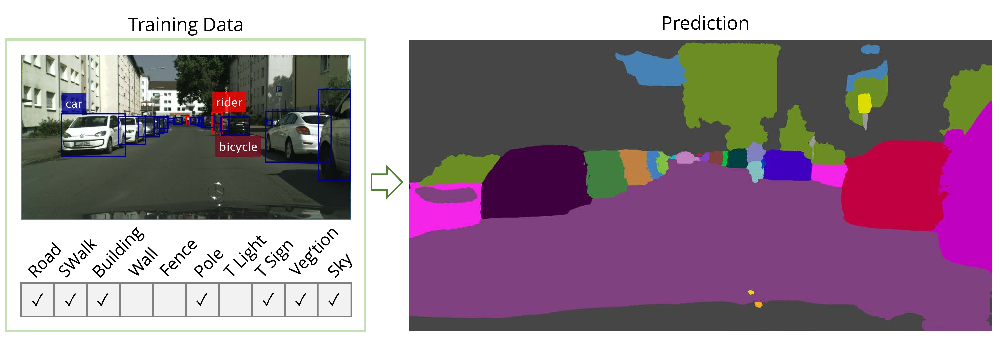

Abstract:
We present a weakly supervised model that jointly performs both semantic- and instance-segmentation -- a particularly relevant problem given the substantial cost of obtaining pixel-perfect annotation for these tasks. In contrast to many popular instance segmentation approaches based on object detectors, our method does not predict any overlapping instances. Moreover, we are able to segment both "thing" and "stuff" classes, and thus explain all the pixels in the image. "Thing" classes are weakly-supervised with bounding boxes, and "stuff" with image-level tags. We obtain state-of-the-art results on Pascal VOC, for both full and weak supervision (which achieves about 95% of fully-supervised performance). Furthermore, we present the first weakly-supervised results on Cityscapes for both semantic- and instance-segmentation. Finally, we use our weakly supervised framework to analyse the relationship between annotation quality and predictive performance, which is of interest to dataset creators.